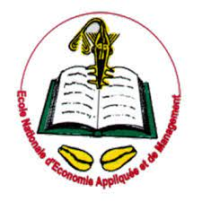
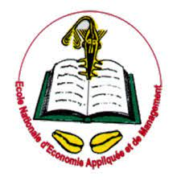

1-Primaire: J'ai fais les six (6) classes du primaire à l'école primaire catholique St Augustin
2- Secondaire: Après avoir obtenu mon CEP, j'ai continuer mon parcours scolaire au collège de mon école qui est le cours secondaire St Augustin (CSSA)
Je m'appelle Augias . J'ai 19 ans. Je suis étudiant en première année en informatique de gestion à l'ENEAM .